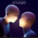

SHOT
1 / 9
|
Escritorio y Barra de Tareas
|
0.0s

Lemonade
Internet Money
11:09
15/10/2026
Lemonade
Internet Money • Don Toliver, Gunna
0:45
3:15
50%
Reconectar reproductor
Pantalla / Monitor
Cerrar widget
A
Automático (Pantalla 2 si hay pantalla completa)
1
Pantalla 1 (Principal)
2
Pantalla 2 (HDMI / Secundaria)
Screen 1 • Fullscreen Active
FULLSCREEN DETECTED
Widget intelligently auto-relocated
Screen 2 • Relocated Destination
Inner Light
Elderbrook, Bob Moses
TaskbarMusicWidget
Music right where your eyes already are.
PLAY FILM
TIEMPO:
00.0s / 50.0s
CÁMARA:
1.02×
PANTALLA COMPLETA
EXPORTAR VÍDEO (MP4/WebM)